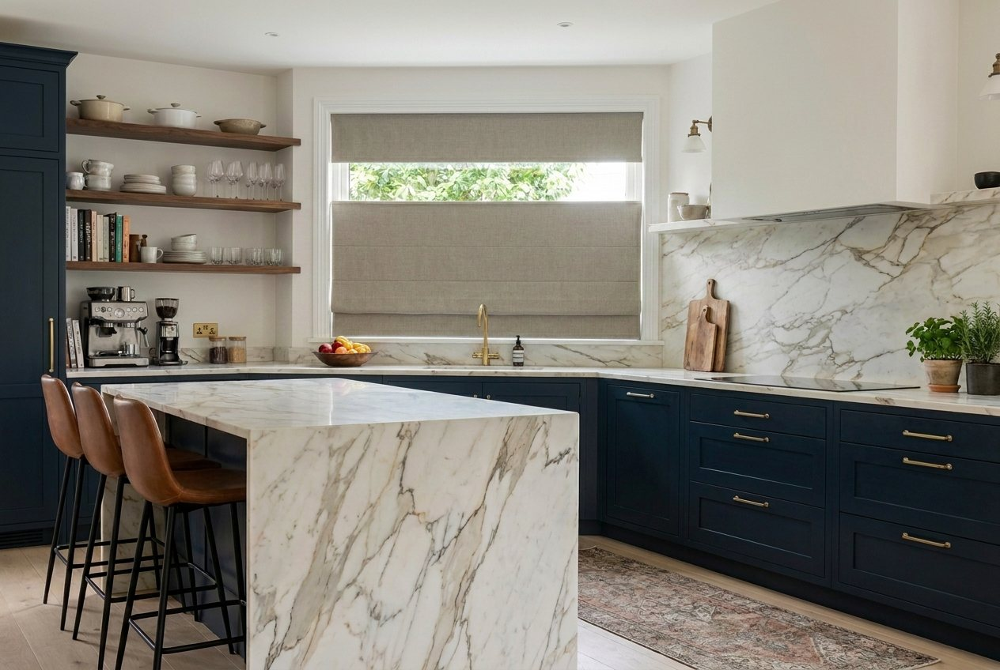

Daylight at the top, privacy at the bottom — on the same shade.
A top-down bottom-up shade — TDBU for short — has two independently moving rails. Lower the top rail and daylight pours in over the fabric while the lower half of the window stays covered. Raise the bottom rail and it works like any other shade. Move both, and the fabric floats anywhere in the window.
It is the single feature homeowners ask for by name once they have seen it work, and LUMIA builds it made to measure on Roman shades and cellular shades — cordless, cord loop or motorized.
All three drives, on every TDBU shade: cordless, continuous cord loop and motorized. No compromise on how you operate it.

An industry first — the tailored fold of a Roman shade with two independently moving rails. Back-rod, front-rod, relaxed and hobbled folds, in every fabric group.

Single, double and triple cell honeycomb from sheer to blackout — the classic TDBU shade, with insulation built into the cell structure.
TDBU has been available on cellular shades for years. On Roman shades it has effectively not existed, because the fabric is heavier, the fold has to stay square, and the second rail has nowhere to hide. LUMIA was the first manufacturer to bring it to market on Roman shades — and we did it on all three drive types rather than one.
Spring-balanced on both rails. No accessible cord anywhere on the unit.
Tensioned continuous loop with wall anchor. For heavier fabrics and tall drops.
Both rails driven and addressable independently, by app, remote or schedule.
| Drive | Width | Drop |
|---|---|---|
| Cordless TDBU | 24″ – 96″ | 24″ – 96″ |
| Cord loop TDBU | 24″ – 105″ | 24″ – 120″ |
| Motorized TDBU | 34″ – 105″ | 24″ – 120″ |
Every shade is made to the measured window, to the eighth of an inch. Cellular TDBU ranges are shown in the cellular configurator as you select options.
A top-down bottom-up shade has two independently moving rails, so it can open from the top, from the bottom, or both at once. Lowering the top rail lets daylight in over the fabric while the lower part of the window stays covered for privacy.
Yes. LUMIA was the first manufacturer to bring top-down bottom-up to market on Roman shades, and it is available on all three drive types: cordless, continuous cord loop and motorized.
Yes. On motorized TDBU units both rails are driven and addressable independently, by app, remote or schedule — built on Matter over Thread with Motionblinds drives. See motorization for drives, ecosystems and remotes.
The cordless TDBU option is spring-balanced on both rails and has no accessible cord anywhere on the unit. All LUMIA shades are built to EN 13120 and ANSI/WCMA A100.1 child-safety standards.
Top-down bottom-up is available on Roman shades and cellular (honeycomb) shades, made to measure, in cordless, cord loop and motorized versions.
Dealers and integrators get their own price list, sample support and a technical contact who answers in the same working day.